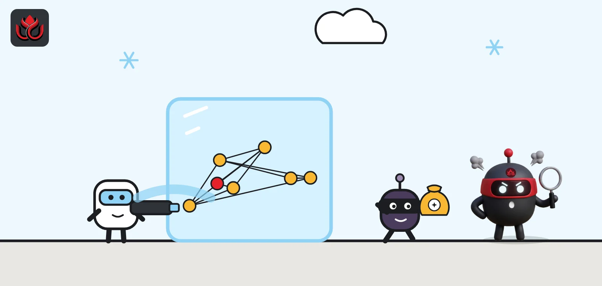
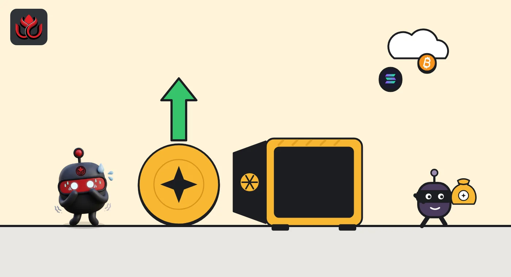
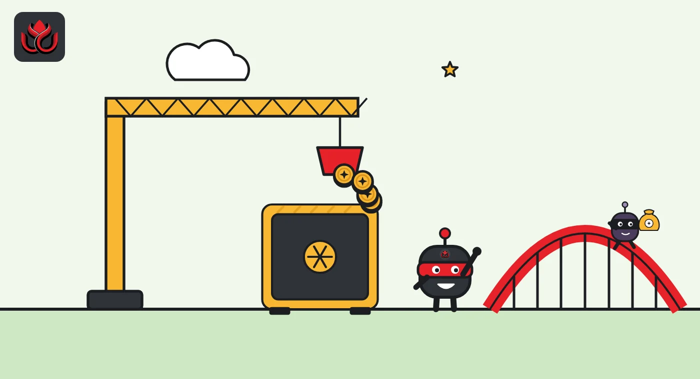

Cronos halted its whole chain to undo a $120 million Tectonic drain. $9 million got away
An attacker pumped the TONIC token about 195 times and borrowed $120.4 million against it from Tectonic, the biggest lender on Crypto.com's Cronos chain. Validators stopped the network and rewound it, but about $9.19 million had already left.

Key points
- On August 30, 2026, an attacker borrowed $120.4 million from Tectonic, the biggest lender on Cronos, against a token it had pumped about 195 times.
- Cronos validators stopped the entire chain and restarted it from before the exploit, reversing every transaction in between.
- About $9.19 million had already moved to Ethereum and has not been recovered. Tectonic no longer accepts TONIC and seven other tokens as collateral.
What was taken
An attacker borrowed $120.4 million from Tectonic, the largest lending protocol on Crypto.com's Cronos blockchain, on Sunday, August 30, 2026, using a token whose price it had pumped about 195 times. Cronos validators then halted the whole chain and rewound it, but about $9.19 million had already escaped to Ethereum.
Tectonic is a copy, or fork, of Compound, a well-known lending protocol: users supply crypto into shared pools and borrow other assets against it. The drain came in a single transaction at 8:49 a.m. ET, when the attacker borrowed $120.4 million in nominal value from nine Tectonic markets, according to Tectonic's postmortem. The collateral was TONIC, Tectonic's own governance token, whose reported value the attacker had pushed up roughly 195 times in about seven minutes.
Of the borrowed sum, $75.7 million went to an attacker wallet and $44.7 million to a holding contract. The largest items were about $55.2 million in USDC and $45.6 million in USDT, plus WBTC, WETH, CRO and other tokens.
Tectonic told users not to interact with the protocol while it investigated. Cronos announced that it had identified an exploit in Tectonic and halted the network.
How the attack worked
The setup started early. The attacker's first transaction on Cronos, on August 18, deployed the holding contract that later received the stolen funds. Small test deposits of about $1,900 per asset followed. Between August 28 and 30, about $5 million was bridged in and posted as starting collateral, the postmortem says.
The key flaw was a loop. TONIC could be borrowed from Tectonic and supplied back as collateral in the same transaction. The attacker did this 98 times in one transaction, until almost the whole circulating supply of TONIC sat in Tectonic as collateral. Each round added fresh borrowing power.
Next came the pump. Between 8:38 and 8:49 a.m. ET, three more transactions pushed TONIC's market price up. The TONIC trading pool recorded 638 trades from 236 addresses, worth $5.1 million, in that window. Because Tectonic valued TONIC at its spot price, the collateral suddenly looked enormous on paper.
Tectonic's own root-cause finding is blunt. TONIC had a 20% collateral factor, meaning $100 of TONIC let a user borrow $20, against thin market liquidity. There was no cap tying TONIC collateral to market depth, no block on borrowing and resupplying the same token in one transaction, and no check on how fast the price moved.

Why a whole blockchain stopped
Most public blockchains cannot be paused. Cronos can, because a small set of validators, the computers that confirm blocks, can agree to stop producing them.
After the borrow, the holding contract sold non-stablecoin assets for CRO and moved funds to Ethereum through a bridge. From 9:03 to 10:15 a.m. ET, about $6.3 million in USDC reached Ethereum and was swapped to ETH. Validators halted the network at 10:32 a.m. ET, 83 seconds after the attacker's last bridge transfer cleared, Tectonic said.
Cronos called the halt a "validator-consensus emergency action to protect users". The chain state was restored to before the exploit, and blocks resumed at 7:49 p.m. ET on August 30 from block 90,896,189. Node operators were told to restart on Cronos v1.7.8. Cronos warned that some protocols, explorers and bridges would take longer to return.
The rollback also reversed every other transaction made on Cronos between the exploit and the halt, for every user. Tectonic said it was working with exchanges and bridge operators to settle transfers that were in flight when the network stopped.
What was lost for good
The rollback returned the assets still on Cronos to their pre-exploit state. What had already crossed to Ethereum was out of reach. Tectonic puts that at about $9.19 million, which has not been recovered. Tracing involves forensics firms, law enforcement, stablecoin issuers, exchanges and bridge operators, and issuer freezes have been requested where possible, the postmortem says.
The attacker's own capital was small next to the haul: about $5 million of bridged collateral, used to borrow $120.4 million in nominal value.
Tectonic exploit in figures
US$ million

Timeline
Attacker deploys the holding contract on Cronos
About $5 million bridged in for collateral
TONIC borrow-and-supply loop and price push begin
Attacker borrows $120.4 million from nine markets
About $6.3 million in USDC reaches Ethereum
Cronos validators halt the network
Blocks resume from 90,896,189 with state restored
Tectonic publishes its postmortem
TONIC and seven other tokens reach 0% collateral factor
What Tectonic changed
Tectonic paused supply and borrowing across all markets at 7:53 p.m. ET on August 30, while withdrawals and repayments stayed open. It said markets would stay paused until new safeguards were in place and verified, including monitoring for oracle moves, single accounts borrowing across many markets and sudden utilization spikes.
It also promised to phase out hard-to-price, low-liquidity tokens as collateral and to add borrow caps per market. That phase-out ran through September in steps. On September 26, Tectonic announced a third cut that took TONIC from 10% to 5%. On October 4 at 11:00 p.m. ET, the final step went live: TONIC, VVS, FUL, FER, VNO, bCRO, USC and USCd all sit at 0% and no longer count as collateral.
Tectonic thanked the Cronos Labs and Crypto.com security teams, the validators and SlowMist, and said it could not share details of active law enforcement work.
LC Insight analysis
This section is our reading of the facts above, not a statement of fact.
- The rollback will be argued over for a long time. It saved most of the money, but it proved a small group of validators can rewind recent history when they choose, the very thing many crypto users hoped blockchains would never do.
- The root cause is old: accepting a thin, easily pumped token as collateral at its spot price. Cutting eight tokens to 0% is the right fix, and we expect lenders on smaller chains to check what they accept.
- Eighty-three seconds separated the attacker's last bridge transfer from the halt. Chains that keep an emergency stop will face pressure to automate their monitoring, because a halt run by people will usually be a little late.
What's next
- Recovery or freezes of the roughly $9.19 million bridged to Ethereum
- When Tectonic reopens supply and borrowing, and with which borrow caps
- Cronos Network's own incident report
- Any law enforcement action tied to the attacker addresses
Disclaimer. This article is based on public information and the sources listed below as of the update time shown. It is for information only and is not investment, legal or tax advice. Figures may change as companies and authorities publish new data.
Sources
- Tectonic, Incident Post-Mortem on X (September 8, 2026)
- Tectonic, incident notice on X (August 30, 2026)
- Cronos Network, halt announcement on X (August 30, 2026)
- Cronos Network, restart announcement on X (August 31, 2026)
- Tectonic, third collateral factor reduction notice on X (September 26, 2026)
- Tectonic, final collateral factor reduction on X (October 5, 2026)